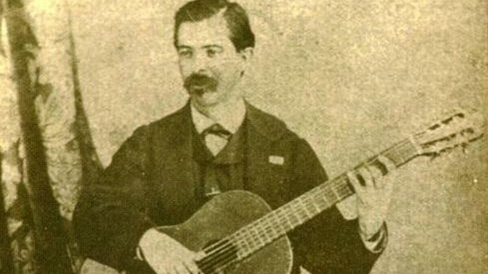

La Guitarra.
La historia de la guitarra, se remonta a miles de años en la antigüedad. Ha sufrido multitud de evoluciones, hasta llegar a la forma actual. Explicaremos su origen, quién es su inventor y su evolución.

Origen de la guitarra.
La guitarra desciende de la lira que se usaba en la Antigüedad clásica, probablemente inventada por los hititas en torno a 1500 a.C., y utilizada por todos los poetas griegos para acompañar sus versos.
A veces se usaba una púa para tocarla, como en las guitarras. En la India se usaba un instrumento similar llamado sitar (que significa “acorde musical” en idioma sánscrito), cuya invención se desconoce, aunque podría tener más de cuatro milenios de antigüedad, con una caja de resonancia hecha con media calabaza.
De la India pasó a Persia y de ahí a Grecia con el nombre de khitara, del que derivó la cítara española, que no tiene nada que ver con la guitarra, pues no tiene mástil todavía.
Fueron los árabes quienes le añadieron el mástil y le llamaron al’ud (que significa “la madera”), que los españoles convirtieron en laúd.
No tardó mucho tiempo en enderezarse el mástil quebrado del laúd para dar lugar a la vihuela, que se tocaba en todo el imperio español, en tabernas, capillas y ambientes cortesanos.
De alguna manera, se recuperó el nombre de la cítara para renombrar guitarra a la vihuela, y en 1675 ya tenemos una Instrucción de música sobre la guitarra española y métodos de sus primeros rudimentos hasta tocar con destreza.
Quién inventó la guitarra.
Como muchos otros instrumentos musicales, es muy complejo saber realmente quién es el inventor de la guitarra. Existen muchas teorías y “leyendas” al respecto. Pero la que tiene más adeptos es la siguiente:
El inventor de la guitarra fue un árabe nacido en Bagdad que se llamaba Zyryab, que viajó a Córdoba en el siglo VIII. Le añadió una quinta cuerda al laúd, el alud árabe y fundó una escuela de música cuya influencia fue determinante en su evolución.
Aunque parece que históricamente no puede defenderse el origen español de la guitarra, es cierto que los romanos a su llegada llamaban sistro o cítara hispánica a un instrumento que se tañía en Hispania muy parecido a la guitarra renacentista. Evolución de la guitarra
La guitarra se desarrolla entonces en toda Europa, pero solo en España se convierte en un instrumento popular que toca “todo el mundo” como si fuera un cencerro.
En otros países, al comienzo, solo se enseñaba a tocar la guitarra en ciertas escuelas de música. Y por consiguiente, solo los músicos sabías tocarla.
Evolución de la guitarra a través del tiempo.
Llegado el año 1874, el fabricante español lutier (nombre de quienes construyen y reparan instrumentos de cuerda) Antonio Torres Jurado le da la forma actual. Es decir, exactamente tal y como la conocemos en la actualidad.
Pero esto no quedaría aquí, más de 50 años después, la guitarra española sería la base para crear un nuevo instrumento: la guitarra eléctrica.
{kind=link}